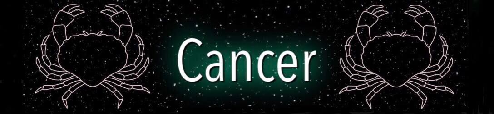
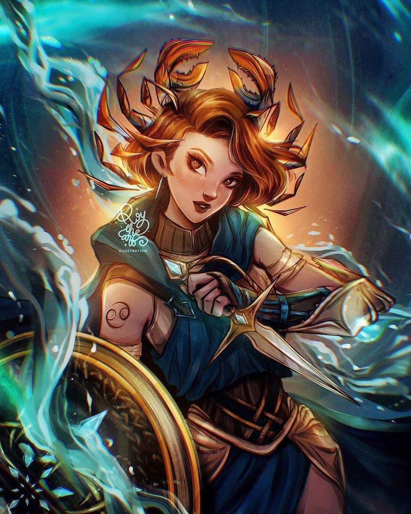

 |
|

Deeply intuitive and sentimental, Cancer can be one of the most challenging zodiac signs to get to know. They are very emotional and sensitive, and care deeply about matters of the family and their home. Cancer is sympathetic and attached to people they keep close. Those born with their Sun in Cancer are very loyal and able to empathize with other people's pain and suffering.
The sign of Cancer belongs to the element of Water, just like Scorpio and Pisces. Guided by emotion and their heart, they could have a hard time blending into the world around them. Being ruled by the Moon, phases of the lunar cycle deepen their internal mysteries and create fleeting emotional patterns that are beyond their control. As children, they don't have enough coping and defensive mechanisms for the outer world, and have to be approached with care and understanding, for that is what they give in return.
Lack of patience or even love will manifest through mood swings later in life, and even selfishness, self-pity or manipulation. They are quick to help others, just as they are quick to avoid conflict, and rarely benefit from close combat of any kind, always choosing to hit someone stronger, bigger, or more powerful than they imagined. When at peace with their life choices, Cancer representatives will be happy and content to be surrounded by a loving family and harmony in their home.